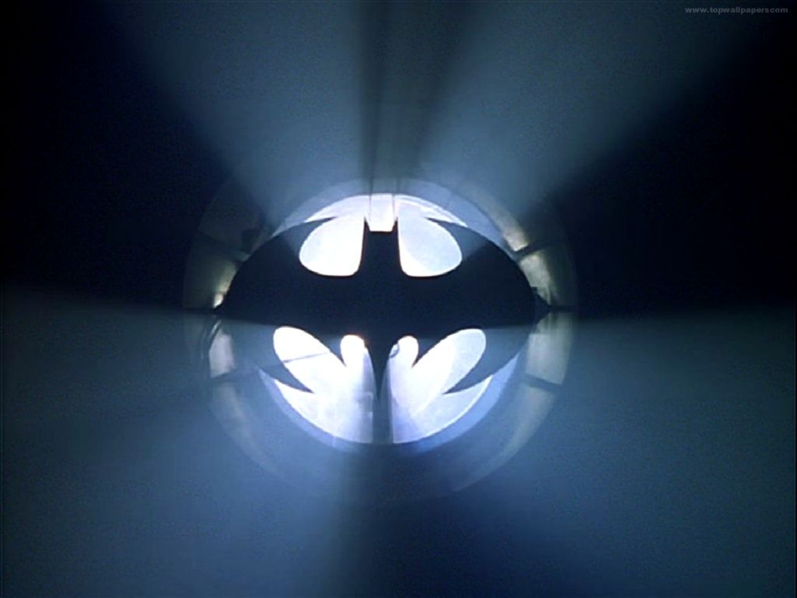
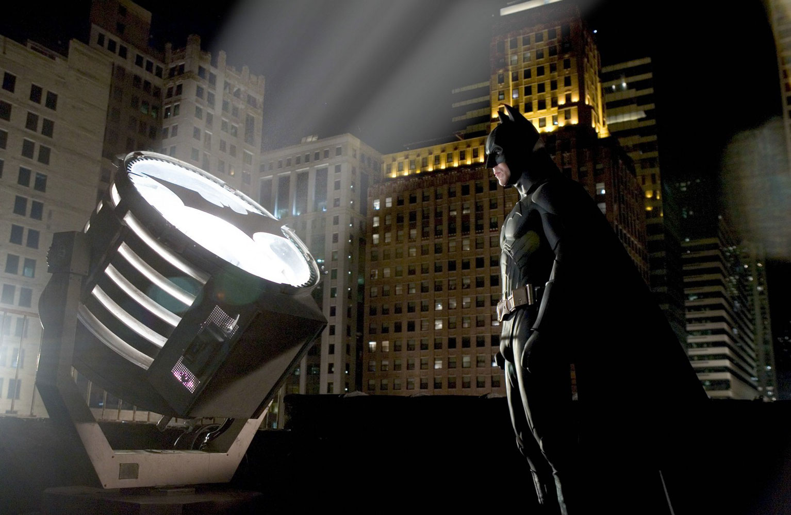

The Bat Signal
Perhaps the most crucial element to Batman's crime fighting (besides that awesome brain of his, and Alfred) is the bat signal. Commissioner Gordon uses it to call upon Batman when he's desperately
needed to fight crime, and without it, Batman would be sitting at home, watching TV, blissfully
unaware that his city needs help.In the stories, the signal is used by the Gotham City Police Departmentas a
method of contacting and summoning Batman to their assistance in the event of a serious crisis and as a weapon of psychological intimidation to the numerous villains of Gotham City.
- 
-

- 